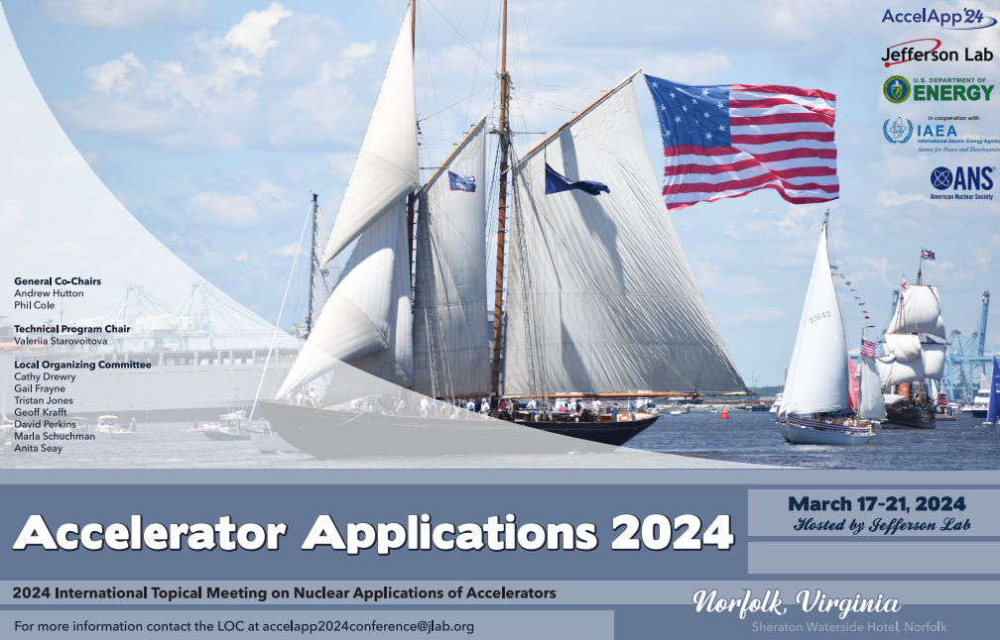

The Problem
Contaminated soils, including soils carrying persistent “forever chemicals,” are expensive and slow to clean up when they have to be excavated and transported to a fixed treatment facility. Electron beam irradiation can break down contaminants, but conventional accelerator facilities are permanent installations.
The goal of this Department of Energy–funded research was to determine whether an electron beam treatment station could be made mobile, meaning designed to fit on a road-going trailer and still deliver an effective dose to the soil.
To fill in: Add 1–2 sentences on the specific design constraints you worked against (e.g., legal trailer weight and size limits, shielding, beam energy, target throughput).
My Role
- Owned the mechanical design of the mobile facility as my M.S. thesis under Dr. David Staack.
- Hosted weekly design reviews with my research advisor to evaluate progress and strategize improvements.
- Used SolidWorks to assess feasibility, estimate total facility weight, and run FEA simulations.
- Presented the work at the 2024 International Topical Meeting on Nuclear Applications of Accelerators.
Approach
I developed the trailer layout and soil-loading assembly in CAD, then iterated on the design using weight estimates and FEA results to keep the system within mobile-transport limits. Dose-profile simulations were used to check that soil passing under the beam received an effective, even treatment.
To fill in: Describe 2–3 key design decisions or trade-offs (e.g., how the soil is conveyed under the beam, shielding approach, how you balanced weight against structural margin).
Results
To fill in: Add quantitative outcomes if you can share them (final facility weight, FEA safety factor, treatment throughput or dose uniformity).
What I Learned
To fill in: Add 2–3 sentences on what you would do differently or what this project taught you about designing under competing constraints.
Gallery


